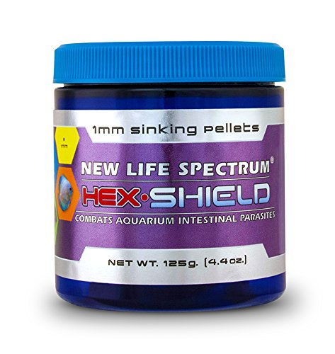
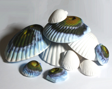
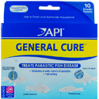

| Code | Name of Item | Description | Price | Picture |
| M01 | Fish Medicinal Food-
HEX SHIELD 125g |
·Highly palatable medicated food delivers treatment where it is needed most to effectively combat intestinal parasites. New Life Spectrum HEX SHIELD Sinking Pellets treat and prevent a variety of wasting diseases caused by aquarium intestinal parasites. Whole Antarctic krill is the first ingredient to ensure eager consumption of this treatment against flagellates and organisms that cause intestinal disorders such as Hexamita and Spironucleus. | $43.00 |  |
| M02 | Wonder Shell |
·Aids in Chlorine removal & helps keep aquarium clear. ·Excellent for use with Goldfish, Livebearers, Cichlids, and more. ·These mineral blocks can help cure scoliosis in fish such as Guppies or even Bettas when lack of minerals is the cause. ·Each shell oxygenates, aerates and aids in neutralizing harmful acids resulting from normal bio processes. This makes the small Wonder Shell an Excellent Choice for Betta Bowls ·(Especially when combined with Pillow Moss, Peat,Indian Almond Leaf Extracts, or Driftwood pieces). ·Comes in small, medium, large |
$1.99-$3.99 |  |
| M03 | API Pro Series; GENERAL CURE- |
·10 powder packets for 10 gallons each ·Alternative treatment for Clout, with less fish stress (especially for delicate fish), although not quite as strong ·General Cure Anti-Parasitic Fish Medication treats a wide variety of parasitic diseases ·For Both Freshwater & Saltwater |
$8.99 |  |